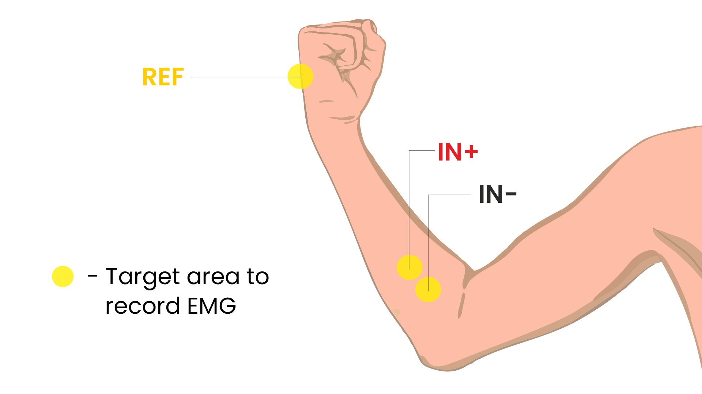
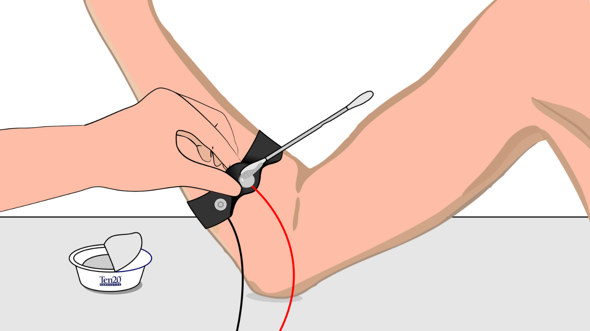

Muscle (EMG) BioAmp Firmware#
Apa itu Electromyography (EMG)?#
Electromyography (EMG) [1] adalah teknik untuk mengevaluasi dan merekam aktivitas listrik yang dihasilkan oleh otot rangka. EMG dilakukan menggunakan instrumen yang disebut electromyograph untuk menghasilkan rekaman yang disebut electromyogram. Sebuah electromyograph mendeteksi potensi listrik yang dihasilkan oleh sel otot ketika sel-sel ini diaktifkan secara elektrik atau neurologis. Sinyal dapat dianalisis untuk mendeteksi kelainan, tingkat aktivasi, atau urutan rekrutmen, atau untuk menganalisis biomekanika gerakan manusia atau hewan. Dalam ilmu komputer, EMG juga digunakan sebagai middleware dalam pengenalan gestur menuju memungkinkan input aksi fisik ke komputer sebagai bentuk interaksi manusia-komputer.
Untuk mempelajari lebih lanjut tentang EMG kunjungi di sini.
Siapa yang ditujukan ini?#
Siapa saja yang menggunakan Hardware BioAmp Muscle untuk pertama kalinya — baik Anda siswa, hobiis, pendidik, atau hanya penasaran. Tidak diperlukan pengalaman!
👉 Untuk mempelajari Hardware BioAmp kami checkout halaman hardware.
Panduan Setup Langkah demi Langkah#
Dengan hardware di tangan Anda, Anda hanya beberapa langkah lagi untuk membuka potensinya — mari kita siapkan software!
Langkah 1: Mengunduh Repository GitHub untuk Hardware#
Ini adalah kode yang dibutuhkan Arduino Anda untuk membaca sinyal Muscle (EMG).
Anda memiliki dua cara mudah untuk mendapatkan kode yang akan membantu Anda membaca sinyal EMG Anda:
Unduh Sederhana (direkomendasikan untuk pemula)
Kunjungi halaman GitHub: Muscle BioAmp Arduino Firmware
Klik tombol hijau “Code” > Download ZIP
Ekstrak folder dan simpan di tempat yang mudah ditemukan.
Klon menggunakan Git (untuk pengguna yang mahir teknologi)
Instal Git untuk OS Anda: https://git-scm.com/
Klon repository GitHub ini menggunakan
git clone https://github.com/upsidedownlabs/Muscle-BioAmp-Arduino-Firmware
Langkah 2: Aplikasi yang Diperlukan#
Sebelum Anda mulai menggunakan kit, silakan unduh atau buka berikut ini:
Arduino IDE
Kami membutuhkan Arduino IDE untuk mengunggah kode ke papan Arduino Anda
Tautan untuk mengunduh IDE untuk OS Anda: https://www.arduino.cc/en/software
Website Chords
Kami akan menggunakan Website Chords untuk memvisualisasikan Sinyal Muscle!
Buka website ini: Chords Web
Langkah 3: Hubungkan Hardware Anda#
Pasang Hardware ke Arduino UNO Anda menggunakan jumper wire.
Ikuti diagram wiring yang tepat dari dokumentasi hardware hardware yang Anda gunakan.
Hardware yang kompatibel dengan Firmware Muscle BioAmp:
Ini seperti menyusun puzzle!
Langkah 4: Persiapan Kulit dan Penempatan Elektroda#
Ada dua cara menggunakan Elektroda Gel atau Muscle BioAmp Band.
Menggunakan Elektroda Gel:
Siapkan kulit Anda
Pilih area tempat Anda akan menempatkan elektroda.
Bersihkan kulit menggunakan sapuan alkohol atau Gel Nuprep untuk menghilangkan minyak dan sel mati — ini meningkatkan kejelasan sinyal.
Note
Butuh bantuan dengan persiapan kulit? Lihat panduan lengkap di sini: Panduan Persiapan Kulit
Tempelkan kabel ke elektroda, lalu tempelkan elektroda ke kulit
IN+(positif): Tempatkan ini di lengan bawah bagian dalam.IN–(negatif): Tempatkan 2–3 cm dari IN+, mengikuti arah serat otot.REF(referensi): Tempatkan di area tulang atau netral elektrik, seperti tulang siku atau persendian pergelangan tangan.Lihat diagram di bawah untuk penempatan yang akurat.
Pastikan sisi lengket membuat kontak kuat dengan kulit untuk performa terbaik.

Penempatan EMG#
Menggunakan Muscle BioAmp Band:
Hubungkan kabel BioAmp ke Muscle BioAmp Band dengan cara sehingga IN+ dan IN- ditempatkan di lengan dekat saraf ulnaris & REF (referensi) di sisi jauh band.
Sekarang letakkan setetes kecil gel elektroda antara kulit dan bagian logam kabel BioAmp untuk mendapatkan hasil terbaik

Penempatan Muscle BioAmp Band#
Langkah 5: Cara Mengunggah Kode ke Arduino#
Buka folder yang Anda unduh: Muscle-BioAmp-Arduino-Firmware
Di dalamnya, Anda akan menemukan beberapa subfolder.
Pilih folder untuk eksperimen yang ingin Anda coba. (Untuk pemula: mulai dengan yang pertama dan lanjutkan langkah demi langkah ke yang berikutnya untuk pembelajaran yang lebih baik )
Di dalam folder itu, buka file .ino menggunakan Arduino IDE
Sebagai contoh:
Untuk mencoba sinyal mentah: buka
01_Fixed_Sampling.inoUntuk mencoba sinyal yang difilter: buka
02_EMG_Filter.ino
Note
Anda akan menemukan semua eksperimen tercantum di bawah, masing-masing dengan instruksi langkah demi langkah. Gulir ke yang sedang Anda kerjakan untuk memulai dengan setup yang tepat.
Hubungkan Arduino Anda
Pasang papan Arduino Anda ke port USB komputer menggunakan kabel USB.
Tunggu sistem operasi menginstal driver USB yang diperlukan.
Di Arduino IDE:
Pergi ke Tools > Board > Arduino UNO pilih model papan Anda (misalnya, “Arduino Uno” atau “Arduino Nano” jika Anda wiring ke Nano)
Pergi ke Tools > Port > [pilih port COM yang benar]
Verifikasi (Kompilasi) Sketch
Klik tombol “✔️ Verify” (atau tekan
Ctrl + R).Tunggu “Done compiling.” Jika muncul error, periksa ulang Anda membuka file .ino yang benar.
Klik tombol ✓ Upload (atau tekan
Ctrl + U) untuk mengirim kode ke Arduino Anda.IDE akan mengkompilasi lagi dan mengirim kode ke papan Anda.
LED onboard yang diberi label “L” mungkin berkedip selama upload. Saat Anda melihat “Done uploading”, firmware baru sedang berjalan.
Buka Serial Monitor dan Serial Plotter (Opsional)
Untuk serial monitor dan plotter, kami merekomendasikan menggunakan Chords Web. Namun, jika Anda belajar mengembangkan, Anda mungkin juga menemukan opsi ini berguna.
Untuk Serial Monitor: Di IDE, klik Tools → Serial Monitor (atau tekan
Ctrl + Shift + M).Pastikan baud rate di kanan bawah Serial Monitor disetel ke
115200(atau apa pun yang ditentukan oleh baris Serial.begin(115200); sketch).Anda harus mulai melihat baris-baris angka. Itu adalah pembacaan Anda.
Untuk Serial Plotter: Di IDE, klik Tools → Serial Plotter.
Anda harus mulai melihat plotting grafik dan memvisualisasikan gelombang.
Important
Ingat untuk menutup Serial Monitor & Serial Plotter di Arduino IDE sebelum memulai Visualizer Chords.
Langkah 6: Visualisasikan Sinyal Muscle Anda!#
Buka website: Chords Web
Klik: Visualize Now → lalu pilih Serial Wizard.
Pilih port COM yang benar (sama dari Arduino IDE).
Klik Connect.
Important
Selalu cabut charger laptop Anda saat testing. Mengapa? Charging dapat memperkenalkan noise 50 Hz yang mempengaruhi sinyal.
🎉 Sekarang gerakkan tangan Anda atau kepalkan tinju — Anda akan melihat gelombang EMG real-time di layar!
Mari kita jelajahi semua eksperimen langkah demi langkah#
1. Fixed Sampling
1. Tujuan Program & Gambaran
Sketch Fixed Sampling mendemonstrasikan sampling kontinyu, interval reguler dari pembacaan tegangan EMG (electromyography) mentah dari sensor Muscle BioAmp. Dengan membaca tegangan analog pada tingkat tetap (misalnya, 500 sampel per detik), Anda mendapatkan aliran data EMG yang stabil. Ini bertindak sebagai fondasi untuk setiap demonstrasi pemrosesan sinyal berikutnya. Pemula dapat melihat seperti apa sinyal “mentah” muscle sebelum filtering atau deteksi envelope.
2. Cara Kerjanya
Inisialisasi Pin Sensor
Sketch menyetel pin input analog Arduino (misalnya, A0) untuk membaca nilai tegangan dari sensor BioAmp.
Set Tingkat Sampling
Timer (menggunakan
micros()ataudelayMicroseconds()) memastikan kita memanggilanalogRead(A0)pada interval yang tepat.Misalnya, membaca setiap 2 milidetik → ~500 Hz sampling.
Cetak Nilai Mentah
Pengguna melihat fluktuasi tegangan mentah yang sesuai dengan kontraksi otot.
Loop Selamanya
loop()berlanjut selamanya, terus membaca dan mencetak.
3. Lakukan Hardware
Lihat wiring sesuai instruksi yang diberikan di Connect Your Hardware
4. Unggah Firmware
Untuk proyek ini, navigasi ke folder repository (Muscle-BioAmp-Arduino-Firmware/01_Fixed_Sampling) dan pilih
01_Fixed_Sampling.ino.Untuk mengunggah firmware, lihat How to upload the Code to Arduino
5. Visualisasikan sinyal Anda
Ikuti langkah-langkah yang diberikan di Visualize Your Muscle Signals!
6. Menjalankan & Mengamati Hasil
Tidak Ada Kontraksi Otot → Nilai mentah akan menunjukkan noise seperti lonjakan.
Fleks Otot → Tiba-tiba nilai melonjak naik atau turun.
Istirahatkan Otot → Nilai kembali menuju titik tengah.
Note
Untuk panduan detail, kunjungi halaman Instructables kami: Visualizing Muscle Signals (EMG)
2. EMG Filter
1. Tujuan Program & Gambaran
Sketch EMG Filter memperoleh data EMG mentah dari sensor Muscle BioAmp dan menerapkan filter band-pass (sekitar 74.5 Hz–149.5 Hz) untuk mengisolasi sinyal otot. Dengan menghilangkan artefak gerakan frekuensi rendah dan noise frekuensi tinggi, Anda mendapatkan aliran EMG yang lebih bersih dan stabil. Output yang difilter ini ideal untuk tugas hilir seperti deteksi envelope atau kontrol perangkat.
2. Cara Kerjanya
Inisialisasi Pin Sensor
Sketch mengkonfigurasi pin input analog Arduino (misalnya, A0) untuk membaca nilai tegangan dari sensor BioAmp.
Set Tingkat Sampling
Timer (menggunakan
micros()ataudelayMicroseconds()) memastikan kita memanggilanalogRead(A0)pada interval yang tepat.Misalnya, membaca setiap 2 milidetik → ~500 Hz sampling.
Terapkan Filter Band-Pass
Setiap pembacaan analog baru dilewatkan melalui filter digital (biasanya diimplementasikan melalui koefisien FIR atau IIR). Kode filter mempertahankan array kecil (buffer) dari input dan output terbaru, menghitung jumlah tertimbang untuk menghasilkan nilai yang difilter.
Cetak Nilai Mentah
Nilai floating-point yang difilter dikirim melalui Serial (misalnya, Serial.print(filteredValue);), sehingga Anda melihat gelombang EMG yang halus.
Loop Selamanya
loop()berulang selamanya: baca → filter → cetak → delay untuk mempertahankan tingkat sampling.
Untuk mempelajari lebih lanjut tentang filter dan cara menghasilkan filter baru, kunjungi: https://docs.scipy.org/doc/scipy/reference/generated/scipy.signal.butter.html
3. Lakukan Hardware
Lihat wiring sesuai instruksi yang diberikan di Connect Your Hardware
4. Unggah Firmware
Untuk proyek ini, pergi ke folder repository (Muscle-BioAmp-Arduino-Firmware/02_EMG_Filter) dan pilih
02_EMG_Filter.ino.Untuk mengunggah firmware, lihat How to upload the Code to Arduino
5. Visualisasikan sinyal Anda
Ikuti langkah-langkah yang diberikan di Visualize Your Muscle Signals!
6. Menjalankan & Mengamati Hasil
Tidak Ada Kontraksi Otot → Output yang difilter melayang dekat nol (noise baseline kecil).
Fleks Otot → Anda melihat lonjakan halus dalam nilai yang difilter (misalnya, lonjak ke 0.05–0.10), dengan noise dihilangkan.
Istirahatkan Otot → Output yang difilter kembali ke baseline dengan lancar, dengan fluktuasi minimal.
3. EMG Envelope
1. Tujuan Program & Gambaran
Sketch EMG Envelope membaca data EMG mentah, menerapkan filter band-pass (≈ 74.5 Hz–149.5 Hz), lalu menghitung envelope dari sinyal yang difilter. Envelope adalah representasi smoothed, rectified dari amplitudo aktivasi otot. Ini umumnya digunakan dalam kontrol prostetik, robotika, dan penelitian biomedis untuk mendeteksi kapan otot berkontraksi dan dengan kekuatan berapa.
2. Cara Kerjanya
Inisialisasi Pin Sensor
Baca nilai analog pada A0 pada tingkat tetap (misalnya, 500 Hz) dan lewatkan setiap sampel melalui filter band-pass digital (diimplementasikan melalui koefisien FIR atau IIR).
Full-Wave Rectification
Konversi sampel yang difilter ke nilai absolutnya:
float rectified = abs(filteredValue);
Low-Pass (Smoothing) Filter
Terapkan rata-rata bergerak sederhana atau rata-rata bergerak eksponensial ke rectified untuk menghasilkan envelope:
static float prevEnvelope = 0;
float alpha = 0.1;
float envelope = alpha * rectified + (1 - alpha) * prevEnvelope;
prevEnvelope = envelope;
Cetak Envelope
Kirim nilai envelope yang smoothed via Serial.
Loop Selamanya
loop()berulang selamanya: baca → filter → rectify → smooth → cetak → delay untuk mempertahankan tingkat sampling.
3. Lakukan Hardware
Lihat wiring sesuai instruksi yang diberikan di Connect Your Hardware
4. Unggah Firmware
Untuk proyek ini, navigasi ke folder repository (Muscle-BioAmp-Arduino-Firmware/03_EMG_Envelope) dan pilih
03_EMG_Envelope.ino.Untuk mengunggah firmware, lihat How to upload the Code to Arduino
5. Visualisasikan sinyal Anda
Ikuti langkah-langkah yang diberikan di Visualize Your Muscle Signals!
6. Menjalankan & Mengamati Hasil
Otot Istirahat → Nilai envelope tetap dekat nol.
Fleks Lambat → Envelope meningkat secara bertahap.
Fleks Kuat → Envelope puncak lebih tinggi.
Envelope berubah dengan lancar, membuat threshold mudah dideteksi.
Note
For a detailed guide, visit our Instructables page: Recording Publication Grade Muscle Signals Using BioAmp EXG Pill
4. Claw Controller
1. Tujuan Program & Gambaran
Sketch Claw Controller menggunakan data envelope EMG untuk menggerakkan mekanisme “claw” yang didukung servo. Saat Anda fleks otot, servo menutup claw; saat Anda istirahat, claw terbuka. Ini mendemonstrasikan prostetik atau gripper robotik bio-kontrol sederhana, mengilustrasikan bagaimana sinyal EMG dapat diterjemahkan ke gerakan mekanik.
2. Cara Kerjanya
Peroleh & Filter (seperti di EMG_Filter) untuk mendapatkan nilai EMG yang difilter pada ~500 Hz.
Hitung Envelope (seperti di EMG_Envelope) dengan merektifikasi dan smoothing nilai yang difilter.
Petakan Envelope ke Sudut Servo
Sesuaikan konstanta scaling sehingga kontraksi otot tipikal memetakan ke 0–180°.
int angle = map(envelope * 1000, 0, 100, 0, 180);
Kontrol Servo
#include <Servo.h>
Servo clawServo;
...
clawServo.attach(9); // PWM pin 9
clawServo.write(angle);
Loop Selamanya
loop()berulang selamanya: baca → filter → envelope → map → tulis ke servo → delay.
3. Perform the Hardware
Refer to wiring as per instructions given in Connect Your Hardware
Additionally connect:
Servo VCC (Red) → Arduino 5 V (or external 5 V supply for stable power)
Servo GND (Black/Brown) → Arduino GND (and common ground if external supply used)
Servo Signal (Yellow/Orange) → Arduino D9 (PWM pin)
4. Unggah Firmware
Untuk proyek ini, navigasi ke folder repository (Muscle-BioAmp-Arduino-Firmware/04_Claw_Controller) dan pilih
04_Claw_Controller.ino.Untuk mengunggah firmware, lihat How to upload the Code to Arduino
5. Visualisasikan sinyal Anda
Ikuti langkah-langkah yang diberikan di Visualize Your Muscle Signals!
6. Menjalankan & Mengamati Hasil
Otot Istirahat → Servo istirahat pada sudut minimum (sering 0° atau posisi “buka” yang ditentukan).
Fleks Sedang → Servo bergerak sebagian (misalnya, 90°).
Fleks Kuat → Servo bergerak ke maksimum (180°, claw tertutup penuh).
Istirahat → Servo kembali ke sudut buka. Sesuaikan mapping jika arah terbalik.
Note
Untuk panduan detail, kunjungi halaman Instructables kami: Controlling Servo Claw With Muscle Signals Using Muscle BioAmp Shield
5. Servo Control
1. Tujuan Program & Gambaran
Sketch Servo Control adalah demonstrasi generik menggunakan amplitudo envelope EMG untuk menggerakkan motor servo tunggal. Alih-alih mekanisme claw, ini memetakan envelope langsung ke sudut rotasi servo. Contoh ini dapat digunakan kembali untuk mengontrol lengan robotik, roda, atau struktur apa pun yang digerakkan servo berdasarkan usaha otot.
2. Cara Kerjanya
Peroleh & Filter EMG pada A0 pada ~500 Hz (filter sama seperti EMG_Filter).
Hitung Envelope dengan merektifikasi dan smoothing nilai yang difilter.
Petakan Envelope ke Sudut Servo
Sesuaikan konstanta sehingga kontraksi tipikal mencakup rentang servo yang diinginkan.
int angle = map(envelope * 1000, 0, 100, 0, 180);
Kontrol Servo
#include <Servo.h>
Servo myServo;
...
myServo.attach(9);
myServo.write(angle);
Loop Selamanya
loop()berulang selamanya: baca → filter → envelope → map → tulis → delay.
3. Perform the Hardware
Refer to wiring as per instructions given in Connect Your Hardware
Additionally connect:
Servo VCC (Red) → Arduino 5 V (or external 5 V supply for stable power)
Servo GND (Black/Brown) → Arduino GND (and common ground if external supply used)
Servo Signal (Yellow/Orange) → Arduino D9 (PWM pin)
4. Firmware Upload
For this project, navigate to the repository folder (Muscle-BioAmp-Arduino-Firmware/05_Servo_Control) and select
05_Servo_Control.ino.To upload firmware, refer to How to upload the Code to Arduino
5. Visualize your signal
Follow the steps given in Visualize Your Muscle Signals!
6. Running & Observing Results
Relaxed Muscle → Servo rests at minimum angle (often 0° or defined “open” position).
Flex Gently → Servo moves gradually between 0° and 180°, proportional to muscle strength.
Strong Flex → Servo moves to maximum (180°).
Relax → Servo returns to open angle. Adjust mapping if directions are inverted.
6. LED BarGraph
1. Tujuan Program & Gambaran
Sketch LED BarGraph memvisualisasikan aktivasi otot dengan menyalakan baris LED secara proporsional dengan amplitudo envelope EMG. Saat kekuatan kontraksi meningkat, lebih banyak LED yang menyala (seperti meter VU). Ini memberikan umpan balik visual langsung tanpa perlu komputer.
2. Cara Kerjanya
Peroleh & Filter EMG pada A0 pada ~500 Hz (filter band-pass seperti di EMG_Filter).
Hitung Envelope dengan merektifikasi dan menerapkan rata-rata bergerak.
Skalakan Envelope ke Jumlah LED
const int NUM_LEDS = 8;
int numLit = map(envelope * 1000, 0, 100, 0, NUM_LEDS);
Perbarui LED
Untuk setiap indeks
idari0 sampai NUM_LEDS–1:
if (i < numLit) digitalWrite(ledPins[i], HIGH);
else digitalWrite(ledPins[i], LOW);
Loop Selamanya
loop()berulang selamanya: baca → filter → envelope → map → set LED → delay (misalnya, 10 ms).
3. Lakukan Hardware
Lihat wiring sesuai instruksi yang diberikan di Connect Your Hardware
Selain itu hubungkan:
Anoda setiap LED → resistor 220 Ω → pin digital Arduino D2–D9.
Katoda setiap LED → GND Arduino.
Ikat semua ground bersama.
4. Unggah Firmware
Untuk proyek ini, navigasi ke folder repository (Muscle-BioAmp-Arduino-Firmware/06_LED_BarGraph) dan pilih
06_LED_BarGraph.ino.Untuk mengunggah firmware, lihat How to upload the Code to Arduino
5. Visualisasikan sinyal Anda
Ikuti langkah-langkah yang diberikan di Visualize Your Muscle Signals!
6. Menjalankan & Mengamati Hasil
Otot Istirahat → Beberapa atau nol LED menyala.
Fleks Pelan → LED menyala secara progresif dari LED 1 sampai LED 8 saat envelope meningkat.
Fleks Kuat → Semua 8 LED menyala.
Istirahat → LED mati dalam urutan menurun.
7. Muscle Strength Game
Sketch Muscle Strength Game adalah demonstrasi interaktif menggunakan Muscle BioAmp Shield dan Arduino (Uno atau Nano), sering disajikan di dalam setup “dashboard” kreatif. Ini membaca sinyal EMG dari lengan Anda untuk mengontrol pointer servo yang bergerak maju saat Anda fleks otot.
Saat kontraksi otot Anda kuat dan berkelanjutan, pointer servo maju menuju tujuan (seperti “mengalahkan Thanos”). Jika kontraksi melemah atau berhenti, pointer secara bertahap bergerak kembali, mendorong upaya berkelanjutan. Ini mengubah aktivitas fisik menjadi tantangan visual real-time — semakin keras dan lama Anda fleks, semakin banyak daya yang Anda hasilkan, dan semakin banyak kemajuan yang Anda buat dalam permainan.
Dengan mengubah usaha fisik menjadi umpan balik real-time, ini adalah cara yang menarik untuk memotivasi olahraga dan rehabilitasi.
Note
Untuk panduan detail, kunjungi halaman Instructables kami: Making a Muscle Strength Game Using Muscle BioAmp Shield & Arduino Uno
8. EMG Scrolling
Sketch EMG Scrolling memungkinkan Anda menggulir konten di layar—baik halaman web, dokumen teks, atau tampilan TFT/OLED—menggunakan hanya kontraksi otot. Fleksing di atas satu threshold menggulir “ke bawah,” dan rileks di bawah threshold lainnya menggulir “ke atas.” Ini bisa menjadi cara hands-free untuk menavigasi dokumen panjang atau membantu pengguna dengan mobilitas terbatas.
Note
Untuk panduan detail, kunjungi halaman Instructables kami: Scroll YouTube Shorts Using 2 Channel EMG Signals
9. 2 Channel LCD BarGraph
Sketch 2 Channel LCD BarGraph membaca sinyal EMG dari dua channel terpisah (dua sensor BioAmp Muscle) dan menampilkan envelope mereka berdampingan di LCD 16×2 sebagai dua bar graph horizontal. Ini memungkinkan Anda membandingkan kelompok otot kiri vs. kanan (misalnya, bisep kiri vs. kanan) secara real-time. Ini adalah alat pendidikan untuk memahami aktivasi otot bilateral dan untuk mengembangkan aplikasi seperti prostetik adaptif yang memantau dua kelompok otot secara simultan.
Note
Untuk panduan detail, kunjungi halaman Instructables kami: Visualizing 2 Channel EMG on LCD Display Module
10. EMG Rehab Game
1. Tujuan Program & Gambaran
Sketch EMG Rehab Game adalah permainan berfokus rehabilitasi yang menantang pasien (atau pengguna) untuk mencapai threshold EMG spesifik untuk durasi yang ditetapkan. Misalnya, permainan mungkin memerlukan pengguna untuk menahan kontraksi otot selama 2 detik, lalu rileks selama 2 detik, mengulangi siklus 10 kali. Ini membantu dalam rehabilitasi pasca-luka atau pasca-operasi, di mana terapis ingin mengukur kekuatan otot (peak envelope) dan daya tahan (waktu ditahan). Permainan mungkin menampilkan umpan balik di LCD atau via Serial Monitor, mendorong pasien untuk menyelesaikan setiap tahap.
2. Cara Kerjanya
Inisialisasi Hardware & Variabel
Di
setup(), panggil:
pinMode(A0, INPUT); // sensor EMG pada A0 Serial.begin(115200); // Untuk debugging & prompt Wire.begin(); // Untuk I²C jika menggunakan LCD LiquidCrystal_I2C lcd(0x27, 16, 2); // Jika menggunakan LCD I²C lcd.init(); lcd.backlight(); enum State { HOLD, REST, COMPLETE }; State currentState = HOLD; unsigned long stateStartTime = millis(); int cycleCount = 0; const int MAX_CYCLES = 10; // Total siklus const unsigned long HOLD_DURATION = 2000; // 2 detik const unsigned long REST_DURATION = 2000; // 2 detik const float HOLD_THRESHOLD = 0.030; // Threshold envelope untuk "tahan" const float REST_THRESHOLD = 0.005; // Threshold envelope untuk "istirahat" float envelope = 0;Ini menyiapkan state machine, counter siklus, timing, dan threshold.
Sampling, Filtering, dan Envelope
Di
loop(), sampel pada ~500 Hz (setiap 2 ms), terapkan filter band-pass, lalu hitung envelope:
unsigned long nowMicros = micros(); if (nowMicros - lastMicros >= 2000) { // 2000 µs = 2 ms lastMicros = nowMicros; int rawValue = analogRead(A0); float filtered = applyBandPassFilter(rawValue); float rectified = abs(filtered); envelope = alpha * rectified + (1.0 - alpha) * prevEnvelope; prevEnvelope = envelope; }
Logika State Machine
Lacak tahap mana (HOLD, REST, atau COMPLETE) yang sedang dilakukan pengguna, dengan
stateStartTimemenandai awal tahap itu:
unsigned long now = millis(); switch (currentState) { case HOLD: if (cycleCount == 0 && now - stateStartTime < 100) { displayMessage("Tahan selama 2d"); } if (envelope >= HOLD_THRESHOLD) { if (now - stateStartTime >= HOLD_DURATION) { currentState = REST; stateStartTime = now; displayMessage("Istirahat selama 2d"); } } else { stateStartTime = now; // Reset timer tahan jika envelope turun } break; case REST: if (envelope <= REST_THRESHOLD) { if (now - stateStartTime >= REST_DURATION) { cycleCount++; if (cycleCount < MAX_CYCLES) { currentState = HOLD; stateStartTime = now; displayMessage("Siklus " + String(cycleCount + 1) + "/10: Tahan"); } else { currentState = COMPLETE; displayMessage("Latihan Selesai!"); } } } else { stateStartTime = now; // Reset timer istirahat jika envelope naik } break; case COMPLETE: // Opsional bunyi buzzer atau hentikan pemrosesan break; }
displayMessage(String msg) dapat membersihkan/memperbarui LCD atau cetak via Serial:
void displayMessage(String msg) { lcd.clear(); lcd.setCursor(0, 0); lcd.print(msg); } // Atau jika tidak ada LCD: void displayMessage(String msg) { Serial.println(msg); }
Loop Forever
Each iteration: sample → filter → envelope → update state → display prompt → delay.
3. Lakukan Perangkat Keras
Lihat Connect Your Hardware untuk wiring sensor.
Selain itu hubungkan (jika menggunakan LCD dan/atau buzzer):
Sensor BioAmp → Arduino
BioAmp VCC → Arduino 5 V
BioAmp GND → Arduino GND
BioAmp OUT → Arduino A0
LCD I²C Opsional
LCD VCC → Arduino 5 V
LCD GND → Arduino GND
LCD SDA → Arduino A4 (Uno/Nano)
LCD SCL → Arduino A5 (Uno/Nano)
Buzzer pada D10 Opsional
Buzzer + → Arduino D10
Buzzer – → Arduino GND
Ikat semua ground bersama.
4. Unggah Firmware
Untuk proyek ini, navigasi ke 10_EMG_Rehab_Game/EMG_Rehab_Game.ino dan klik Buka.
Untuk mengunggah firmware, lihat How to upload the Code to Arduino
Juga Instal & Verifikasi Library LCD (jika menggunakan LCD)
Pergi ke Sketch → Include Library → Manage Libraries…
Cari “LiquidCrystal I2C” dan instal LiquidCrystal I2C by Frank de Brabander.
Konfirmasi alamat I²C (misalnya, 0x27 atau 0x3F) dalam kode cocok dengan modul Anda.
5. Visualisasikan Sinyal Anda
Prompt LCD Pada-Perangkat
Setelah unggah, LCD menampilkan:
Hold for 2s
Cycle 1/10
Setelah menahan 2 detik di atas 0.030, diperbarui ke:
Rest for 2s
Cycle 1/10
Setelah istirahat 2 detik di bawah 0.005, diperbarui ke:
Hold for 2s
Cycle 2/10
Ulangi sampai:
Exercise Complete!
Monitor Serial (Opsional)
Buka Tools → Serial Monitor (115200 baud).
Kode mencetak pesan yang sama via Serial, misalnya:
Hold for 2s
Rest for 2s
Cycle 3/10: Hold
…
Exercise Complete!
Plotter Serial (Opsional)
Buka Tools → Serial Plotter (115200 baud).
Modifikasi sketch sehingga setiap loop juga mencetak:
Serial.println(envelope);
Plotter menampilkan waveform envelope, mengonfirmasi crossing threshold.
6. Menjalankan & Mengamati Hasil
Mulai Program - LCD atau Serial menampilkan:
Hold for 2s
Cycle 1/10
Tahap 1: Tahan selama 2 detik - Fleks otot Anda sehingga
envelope >= 0.030terus menerus. - Jika envelope turun di bawah 0.030 sebelum 2 d, timer reset. - Jika ditahan selama 2000 ms, kode beralih ke REST:
Rest for 2s
Cycle 1/10
Tahap 2: Istirahat selama 2 detik - Rileks sehingga
envelope <= 0.005terus menerus. - Jika envelope naik di atas 0.005 terlalu dini, timer istirahat reset. - Setelah 2000 ms, cycleCount bertambah ke 1, kode beralih ke HOLD lagi:
Hold for 2s
Cycle 2/10
Ulangi untuk 10 Siklus - Setiap siklus hold/rest menambah cycleCount. - Opsional, buzzer bunyi sekali. - Setelah Siklus 10, beralih ke COMPLETE dan tampilkan:
Exercise Complete!
Berhenti Dini - Jika envelope turun di bawah HOLD_THRESHOLD selama tahap hold, Anda restart 2 d hold. - Jika envelope naik di atas REST_THRESHOLD selama istirahat, Anda restart 2 d istirahat.
Pemecahan Masalah
Pesan Tidak Muncul di LCD
Konfirmasi LiquidCrystal I2C terinstal dan alamat I²C benar.
Periksa wiring SDA → A4, SCL → A5 (atau pin benar pada board lain).
Sesuaikan potensiometer kontras LCD.
Envelope Tidak Pernah Mencapai HOLD_THRESHOLD
Gunakan Serial Plotter untuk melihat envelope mentah.
Turunkan HOLD_THRESHOLD (misalnya, 0.020) sehingga fleks sedang terdaftar.
Pastikan elektroda sensor BioAmp terpasang kuat dan ground umum.
Sesi Berlangsung Terlalu Cepat atau Lambat
Jika tahap hold selesai terlalu mudah, naikkan HOLD_THRESHOLD (misalnya, ke 0.035).
Jika tahap istirahat tidak pernah selesai, naikkan REST_THRESHOLD (misalnya, ke 0.010).
Buzzer Tidak Bunyi
Verifikasi buzzer + → D10 dan buzzer – → GND.
Pastikan kode memanggil:
tone(10, 1000, 500);
- Sesuaikan frekuensi (1000 Hz) atau durasi (500 ms) sesuai kebutuhan.
Monitor Serial Menampilkan Gibberish
Konfirmasi baud Monitor Serial adalah 115200.
LCD Menampilkan Teks Tidak Lengkap
Kode memanggil
lcd.clear()sebelum setiap prompt baru. Jika sisa tetap ada, sisipkan:
delay(50);
untuk memungkinkan LCD membersihkan sepenuhnya.
11. EMG Counter
Sketch EMG Counter menjaga hitungan berjalan berapa banyak kejadian kontraksi otot yang berbeda terjadi dalam sesi. Setiap kali envelope EMG Anda melintasi di atas threshold yang ditentukan (dan sebelumnya di bawah), counter bertambah satu. Ini berguna untuk melacak jumlah repetisi yang Anda lakukan dalam latihan atau untuk memantau kejadian aktivasi otot.
Note
Untuk panduan detail, kunjungi halaman Instructables kami: Exercise Monitoring Using Wearable Muscle Sensor (EMG)
12. 2 Channel EMG Game Controller
Sketch 2 Channel EMG Game Controller memungkinkan dua channel EMG (dua sensor Muscle BioAmp terpisah) bertindak sebagai kontrol independen untuk menavigasi kursor atau karakter dalam lingkungan game. Channel 1 mengontrol gerakan horizontal (kiri/kanan), dan Channel 2 mengontrol gerakan vertikal (atas/bawah). Dengan fleksing kelompok otot yang berbeda, Anda dapat memindahkan titik pada layar TFT, mengirim penekanan tombol panah ke PC, atau memanipulasi sprite dalam aplikasi web.
Untuk walkthrough detail, ikuti tutorial YouTube untuk proyek ini:
Note
Untuk panduan detail, kunjungi halaman Instructables kami: Controlling Video Games Using Muscle Signals (EMG)
✅ Dan Itu saja!, Selamat telah membuat proyek neuroscience Anda menggunakan Hardware BioAmp.